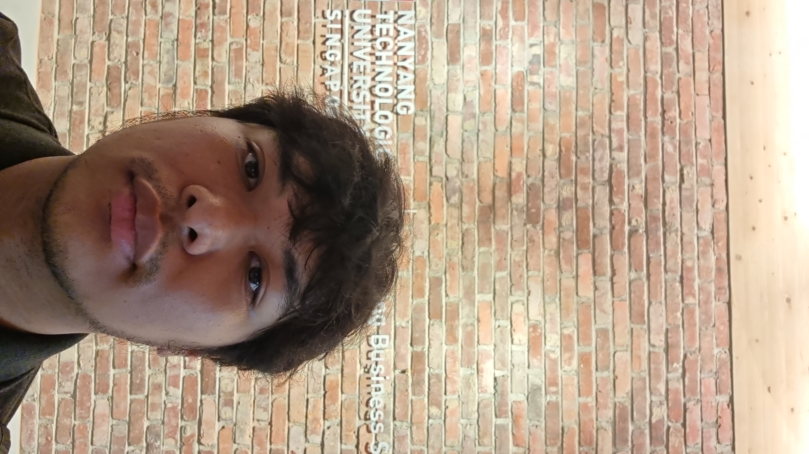

Hi! I'm Aldo Febrien

Summary
My name is Aldo Febrien.
Innovative professional with a background in market insight and a passion
for technology, currently transitioning into a career as a Web Developer.
Proficient in data analysis, consumer behavior analysis, and identifying market trends.
Eager to leverage analytical skills and creativity to excel in web development.
Strong foundation in HTML, CSS, and JavaScript, with a commitment to continuous learning and growth.
Excited to apply market insight expertise to create data-driven web solutions that drive user engagement and satisfaction.
Education
- Bachelor's of Petroleum Engineering - UCSI University Kuala Lumpur, Malaysia (2015 -2019)
Work Experience
- Market Insight Staff - ABC Company
January 2020 - May 2024
- Conduct market research to gather data on industry trends, competitor strategies, and consumer behavior.
- Analyze market data using statistical techniques and data visualization tools to identify key insights and opportunities.
- Monitor and track market trends, including changes in consumer preferences, competitive landscape, and regulatory environment.
- Project Officer Intern - ABC Company
March 2022 - August 2022
- Monitor project progress and performance against established objectives, identifying and mitigating risks as needed.
- Prepare and maintain project documentation, including status reports, meeting minutes, and action items.
Skills
- Market Research: ★★★★
- Microsoft Office: ★★★★
- Organizational Skill:★★★★★
- Analytical Skill:★★★★
Awards and Certifications
- Certified Ethical Hacker (CEH)
- Udemy Certificate "How to be a Product Manager"
Others